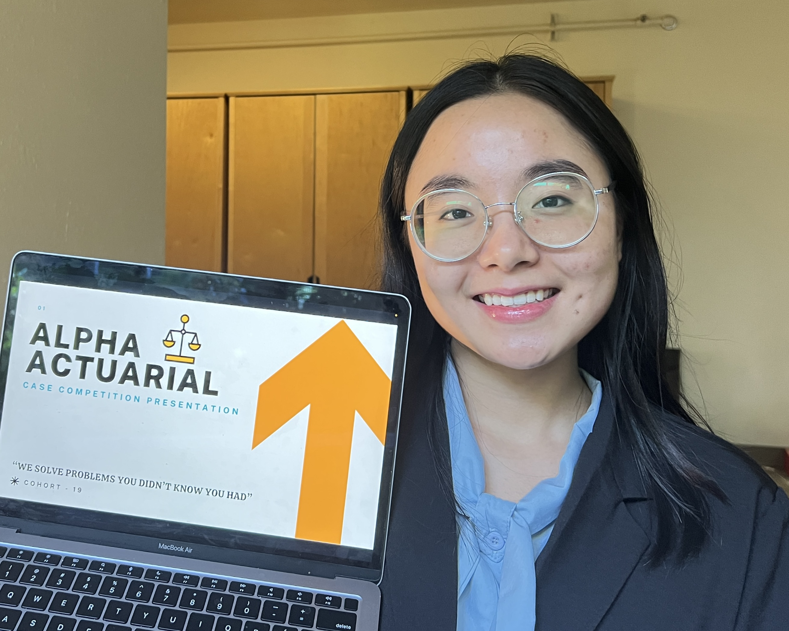
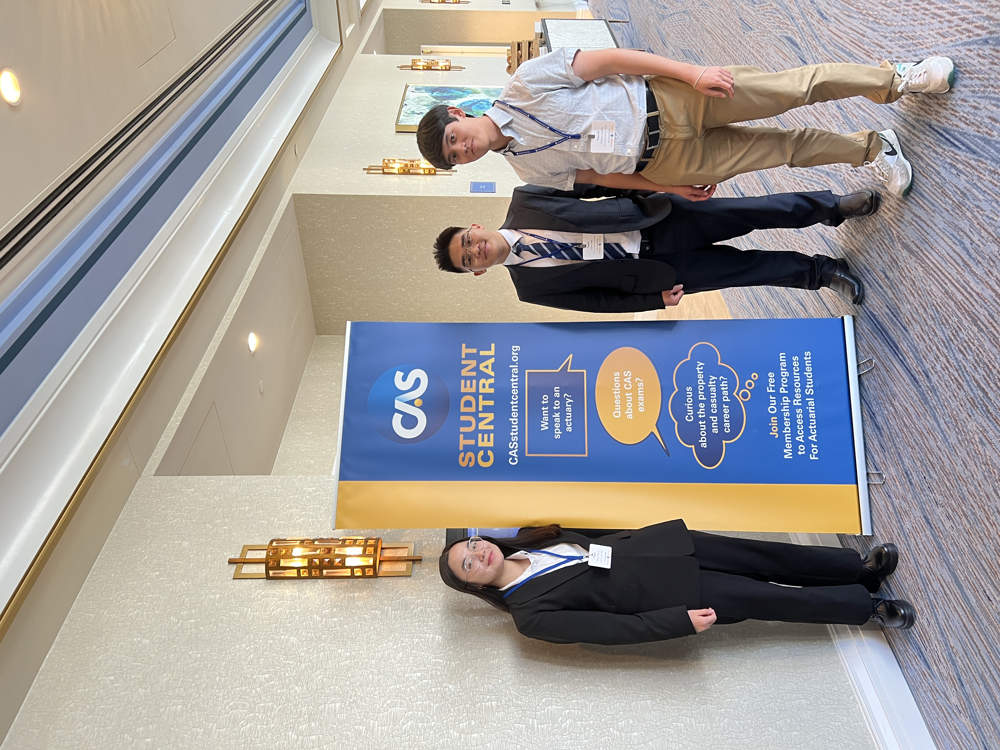

Who I am
About Me
I am a rising senior at Lewis & Clark College, double majoring in Mathematics and Computer Science with a minor in Economics. I am currently founding a startup called Insertact, where we are developing a contact lens insertion and removal device.
Beyond academics and startup, I actively contribute to the Lewis & Clark College community through leadership roles in student organizations and part-time campus positions.
Outside of work and study, I enjoy running, photography, vlogging, cooking, baking, and watching MasterChef, which keep me energized and creative.
Skills
Interests
What I've built
Selected Projects
This project originated from the 2026 Winterim Competition at Lewis & Clark College, where I won first place and decided to move forward with the business. Currently, we are focusing on customer discovery and validation while continuing to develop our prototype. We will present at the final pitch day of InventOR on June 26th.
- Market Research
- Customer Discovery
- Product Development
- Leadership


During the summer of 2025, I worked as a research assistant under Professor Yung-Pin Chen on a mathematics research project focused on the Moran model and stochastic systems.
- Modeled stochastic systems using R and Python to simulate risk dynamics and time-space convergence in uncertain environments.
- Analyzed Markov chains and applied probability theory to study long-term behavior, fixation probabilities, and absorbing states in population-based models.
- Presented research findings at a campus-wide lunch talk, communicating technical concepts and results to students and faculty across disciplines.
- Python
- R


During the summer of 2025, I was accepted into the CAS Center Summer Program. Over eight weeks, we worked on a case competition focused on homeowner insurance. I served as the team lead for a cohort of eight participants. We analyzed two years of insured property data across multiple perils and discount types using Excel to identify risk patterns and develop recommendations.
- Excel
- Data Analysis
- Data Visualization
- Leadership

I led a team of four participants in this case competition. In the case study, we acted as a reinsurance company tasked with proposing a quota share treaty for a client insurance company focused on catastrophic risk. We used Excel to analyze the company's profile, business characteristics, strategic goals, and claims data.
- Excel
- Data Analysis
- Data Visualization
- Leadership

Let's connect
Get in Touch
I'd love to hear from you.
Whether you're interested in collaboration, have a question about my work, or just want to connect — my inbox is always open.
Connect on LinkedIn